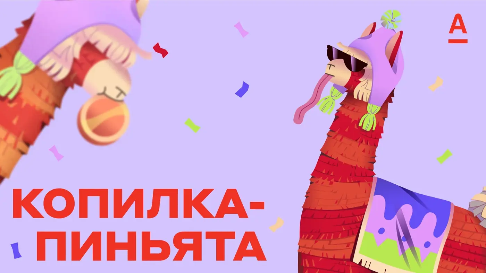
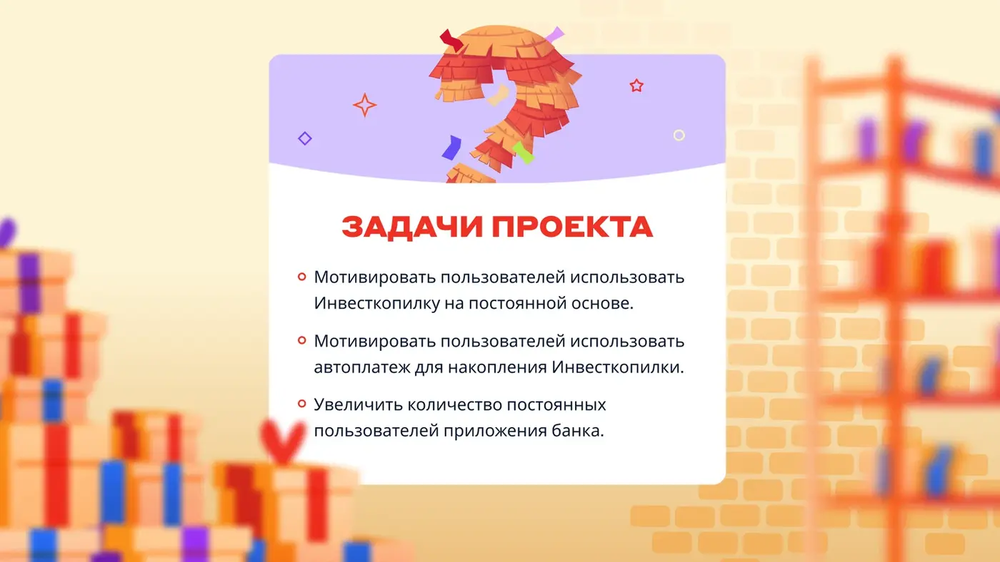
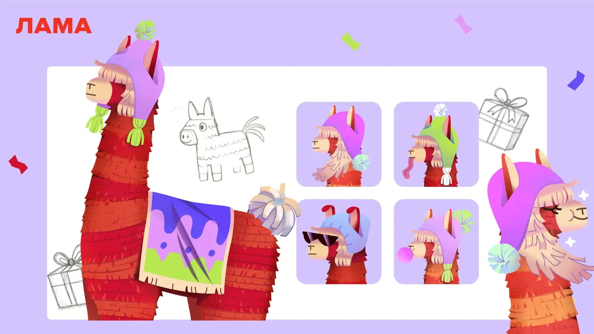

Продвинуть «Инвестиционную копилку»
Целью было подключение продукта вместе с автоплатежами трёх типов и создание понятного повода регулярно возвращаться в игровой сценарий внутри приложения.
Alfa Bank · Game mechanics · Product promo
Игровая промомеханика для инвестиционной копилки: пользователь трясёт телефон, получает шейки, открывает призы и возвращается в продукт каждый день.
О проекте
Копилка-пиньята помогает сохранить накопления в инвестиционной копилке и превращает регулярные пополнения в понятный игровой ритуал.
После подключения инвесткопилки пользователь получает первые шейки. Дополнительные шейки появляются за ежедневные визиты, пополнения и автоплатежи. Чем больше действий, тем больше шансов на приз, а облик ламы меняется вместе с прогрессом.
CASE BREAKDOWN / GAME MECHANICS
Целью было подключение продукта вместе с автоплатежами трёх типов и создание понятного повода регулярно возвращаться в игровой сценарий внутри приложения.
Инвестиционная копилка превращается в виртуальную пиньяту. За каждое полезное действие пользователь получает возможность потрясти телефон с ламой и открыть новый приз.
После подключения пользователь получает три первых шейка. Ещё один выдаётся за ежедневный вход; пополнения и автоплатежи дают дополнительные шейки и шансы на приз.
Главный приз разыгрывается среди участников челленджа. Количество накопленных шансов влияет не только на вероятность выигрыша, но и на визуальную эволюцию ламы — прогресс становится заметным и эмоциональным.


